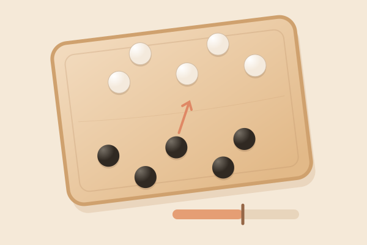

작은 돌 다섯 알 · 짜릿한 한 방
톡! 하고,
네 마음도 흔들까?
엇갈린 다섯 알, 빈틈을 찾아봐.
방향은 신중하게, 타이밍은 짜릿하게!

다섯 알로겨루는 우리
엇갈린 두 줄움직이는 힘 게이지한 알씩 번갈아
컴퓨터와 겨뤄요. 내 흑돌부터 시작!
알까기 배틀
나흑돌 · 5알 남음차례
컴퓨터백돌 · 5알 남음차례
0번
내 돌을 고르고, 보내고 싶은 방향을 톡 눌러봐요.
① 내 돌 선택 → ② 방향 고정 → ③ 힘 모아 톡!
먼저 내 돌을 골라주세요게이지가 올라갔다 내려가요방향을 정하고 힘 모으기를 눌러요
살짝밀어내기MAX 95–100
맨 끝 MAX에서 한 번 더 톡!
먼 돌은 MAX, 가까운 돌은 살짝 밀어봐요.